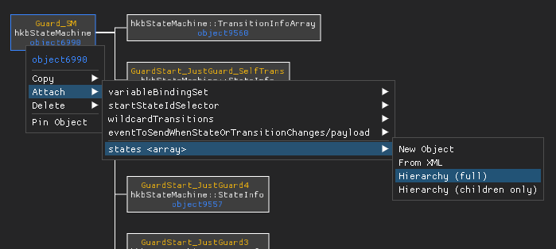
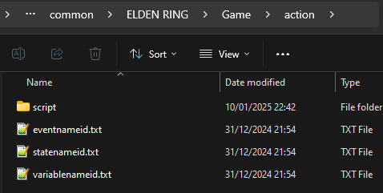

Behaving how you want to¶
This section will outline how to actually use HkbEditor to edit your behavior. At this point I assume that you somewhat know what you want to achieve and have understood the Behaviors section.
When editing behaviors you should typically rely on making small incremental changes. The most common use cases - registering clips and creating CMSGs - can be found in the Workflows menu. To create new hierarchies you would typically start by creating a new target for a pointer (e.g. a new StateInfo for a state machine, or a new entry for a CMSG's generators).
If you have something more complex in mind, definitely have a look at the Templates.
Finding objects¶

Pressing ctrl-f (or selecting Edit -> Find Objects) will open a search dialog which you can use to - well, search for objects. In case this helps you, the search syntax is inspired by lucene (but not quite the same; personally I have no clue what it is :D ).
You search for objects by specifying <field>=<value> tuples, where field is the name of an attribute and value the value results must have. In case of nested attributes you can also use a field path for the field - right click an attribute and select Copy -> Path for this. The field can also be one of id, object_id, type, type_id, type_name, parent. These will also be checked if no field is specified.
Multiple tuples are combined by using AND or OR (spaces are also treated as AND). You can also exclude objects by preceding a tuple with NOT. If your value contains spaces you may surround it with single (') or double quotes ("). To search for a range of numbers use [lower..upper] as your value. Finally, to search for similar values you may add a tilde (~) in front of your value.
Here are some examples:
- bindings:0/memberPath=selectedGeneratorIndex
- Find VariableBindingSets that are binding a ManualSelectorGenerator
- id=*588 type:hkbStateMachine*
- Find objects who's ID ends with 588 *and* have a type name starting with hkbStateMachine (this one is pretty useless)
-NOT animId=[100000..200000]* Find all objects that have an animId attribute with its value outside a certain range
-name=~AddDamageFire`
* Find objects with similar names
Creating new objects¶
To create new objects you have various choices. The most immediate one is to right click a pointer attribute and selecting New object. This will open a dialog which lets you select the object type and adjust its attributes. Once created, it will be added to the behavior and update the selected pointer. You can do the same by right clicking a node in the graph view and choosing a pointer attribute from the Attach menu, then select New object. There is also Workflows -> Create object which will create "orphaned" objects, i.e. objects without any parents.
Duplicating objects¶
If you instead want to duplicate an object you can do so by right clicking its node in the graph view and selecting Copy -> XML. This will copy this object as xml text to your clipboard. To paste the object, find a pointer attribute that will accept it (i.e. you cannot attach a StateInfo to a CMSG). Right click the pointer attribute and select Paste; or right click the node, navigate to the pointer attribute in the Attach menu and select From XML. A copy of the object with a new ID will be created and the pointer will be updated to it.
Note
Note that when copying objects all their pointers will point at the same objects as the original. If this is not what you want see the section on Cloning hierarchies below.
Pinned objects¶
For most operations that create new objects, whether they are abandoned or not, the new objects will also be pinned. This means they will appear in the small table below the list of state machines. Pinned objects allow you to quickly switch between objects to e.g. copy values or jump between them. Objects can also be pinned from the graph view's node context menu.
Cloning hierarchies¶
Sometimes you want to clone an entire hierarchy of objects. To do just that, right click a node from the graph view and select Copy -> Hierarchy. This will copy the hierarchy as xml to your clip board together with some meta data required for reconstruction (more on this in a bit). To paste it, either right click a pointer attribute and select Clone Hierarchy, or use a node's Attach menu and select Hierarchy on the pointer attribute you want.


Tip
Hierarchies can be copied between games as long as all object types exist! Sorry, no Sekiro wall hugging for Elden Ring :(
This will open a dialog showing you the copied structure on the left. On the right you'll find a table of items that are about to be copied, including objects, events, variables, etc. For items that already exist in your behavior you can choose to reuse the existing ones rather than creating copies. If you don't want to include an object or any of its children set its action to SKIP. Then hit okay once you're happy with it.
Cloning children¶
Tip
Here at Strex Corp we are strictly in favor of all evils deeds. As such, cloning children is one of our most cultured activities >:D
There are cases where you want to clone an object's children without the object itself. HkbEditor supports this as well! For this to work, copy the hierarchy as usual. Next, use the Attach menu to locate a pointer array in your target object (e.g. the generators attribute of a CMSG). These are separated by a line from regular pointer attributes. Choose Hierarchy (children only) from the sub menu and proceed as usual.
Merging behaviors¶
Cloned hierarchies are also the current approach to merging behaviors. After copying a hierarchy, paste it into a text file and save it as .xml. In order to import it, select Workflows -> Import Behavior. This will open the cloning dialog from before and will place the saved behavior in the same place where it was found in the original.
Saving changes¶
Once you're happy with your changes you'll want to save your behavior. Note however that this will save everything as xml. For your changes to take effect you have to repack the behbnd.dcx binder.
For Elden Ring and newer, HKLib supports converting back to .hkx, and you should do this to save both on loading times and file size. Unfortunately though, this is right now not supported for older titles like Sekiro or Dark Souls 3. Luckily for us we can use the .xml without conversion (apparently it's inherently supported by Havok). For this to work, edit the _witchy-bnd4.xml file WitchyBND created inside the unpacked folder and change the file extension of the Behaviors/
Next, you'll have to repack the behbnd.dcx binder. Simply right click the folder and use WitchyBND to pack it.
For titles with HKLib support you can also do this from within HkbEditor. Simply hit F4 or select File -> Repack binder and it will save, convert and repack the behavior.
Hot reloading¶
As most parts of modding, editing behaviors is often an iterative process. To save you some time you can directly reload the character for some of the games (right now only Elden Ring). To do this press F5 or select File -> Force game reload. You know it worked if your character briefly disappears.
Name ID files¶
If you have created new events, variables, or animations, they must also be added in 3 additional files which can be found under action/{event|variable|animation}nameid.txt. As these contain entries from ALL NPCs, cutscenes, weapons and so on it is not possible to generate them automatically yet. However, HkbEditor can update them with your additional items by selecting File -> Update name ID files. If your mod doesn't include them yet, simply copy them from the extracted game files to your mod folder.

Danger
Calling events that are not in the eventnameid.txt file will usually crash your game!